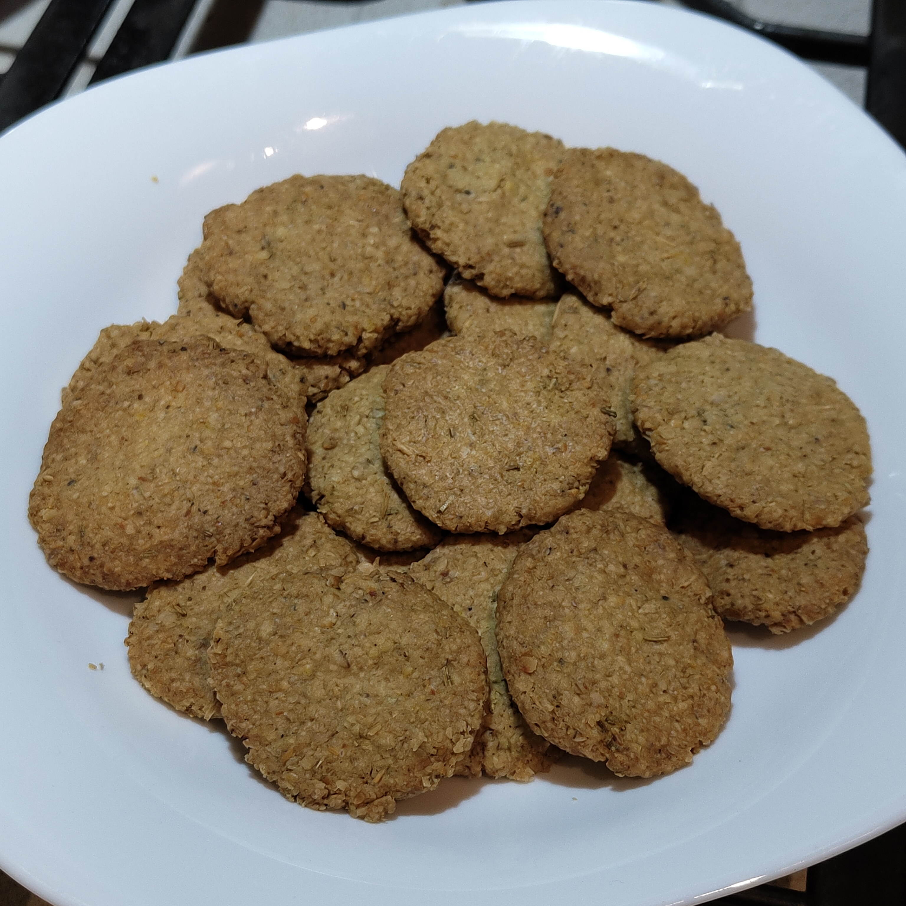

Una ricetta semplice e veloce per crackers speziati e nutrienti
Una porzione: circa 20 crackers

Ingredienti
g fiocchi d'avena
g farina
g crusca
cucchiaio raso di rosmarino
cucchiaino di origano
cucchiaino di timo
cucchiaino raso di curcuma
cucchiaino raso di paprika
cucchiaino colmo di sale
ml olio extra vergine di oliva
ml acqua tiepida
Porzioni: 1
Procedura
Frullare tutti gli ingredienti, esclusi olio e acqua, in un frullatore o robot da cucina. Non
frullare troppo, o la consistenza finale risulterà troppo farinosa
Aggiungere gradualmente olio e acqua e impastare fino a ottenere una consistenza uniforme
Accendere il forno statico a 180 gradi
Preparare dei dischetti uniformi alti mezzo centimetro e di 5 centimetri di diametro e disporli
vicini tra loro su della carta forno
Quando il forno è caldo, infornare a metà altezza e tenere sotto controllo. Sfornare quando i
bordi iniziano a
cambiare colore